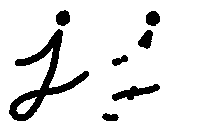
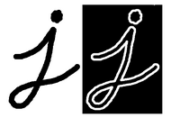
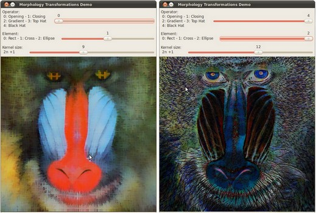

More Morphology Transformations
Goal
In this tutorial you will learn how to:
- Use the OpenCV function cv::morphologyEx to apply Morphological Transformation such as:
- Opening
- Closing
- Morphological Gradient
- Top Hat
- Black Hat
Theory
The explanation below belongs to the book Learning OpenCV by Bradski and Kaehler.
In the previous tutorial we covered two basic Morphology operations:
- Erosion
- Dilation.
Based on these two we can effectuate more sophisticated transformations to our images. Here we discuss briefly 5 operations offered by OpenCV:
Opening
It is obtained by the erosion of an image followed by a dilation.
\[dst = open( src, element) = dilate( erode( src, element ) )\]Useful for removing small objects (it is assumed that the objects are bright on a dark foreground)
For instance, check out the example below. The image at the left is the original and the image at the right is the result after applying the opening transformation. We can observe that the small spaces in the corners of the letter tend to dissapear.

For the sake of clarity, we have performed the opening operation (7x7 rectangular structuring element) on the same original image but inverted such as the object in white is now the letter.
Closing
It is obtained by the dilation of an image followed by an erosion.
\[dst = close( src, element ) = erode( dilate( src, element ) )\]Useful to remove small holes (dark regions).

On the inverted image, we have performed the closing operation (7x7 rectangular structuring element):

Morphological Gradient
It is the difference between the dilation and the erosion of an image.
\[dst = morph_{grad}( src, element ) = dilate( src, element ) - erode( src, element )\]It is useful for finding the outline of an object as can be seen below:

Top Hat
It is the difference between an input image and its opening.
\[dst = tophat( src, element ) = src - open( src, element )\]
Black Hat
It is the difference between the closing and its input image
\[dst = blackhat( src, element ) = close( src, element ) - src\]
Code
This tutorial code’s is shown lines below. You can also download it from here
#include "opencv2/imgproc.hpp" #include "opencv2/imgcodecs.hpp" #include "opencv2/highgui.hpp" using namespace cv; Mat src, dst; int morph_elem = 0; int morph_size = 0; int morph_operator = 0; int const max_operator = 4; int const max_elem = 2; int const max_kernel_size = 21; const char* window_name = "Morphology Transformations Demo"; void Morphology_Operations( int, void* ); int main( int, char** argv ) { src = imread( argv[1], IMREAD_COLOR ); // Load an image if( src.empty() ) { return -1; } namedWindow( window_name, WINDOW_AUTOSIZE ); // Create window createTrackbar("Operator:\n 0: Opening - 1: Closing \n 2: Gradient - 3: Top Hat \n 4: Black Hat", window_name, &morph_operator, max_operator, Morphology_Operations ); createTrackbar( "Element:\n 0: Rect - 1: Cross - 2: Ellipse", window_name, &morph_elem, max_elem, Morphology_Operations ); createTrackbar( "Kernel size:\n 2n +1", window_name, &morph_size, max_kernel_size, Morphology_Operations ); Morphology_Operations( 0, 0 ); waitKey(0); return 0; } void Morphology_Operations( int, void* ) { // Since MORPH_X : 2,3,4,5 and 6 int operation = morph_operator + 2; Mat element = getStructuringElement( morph_elem, Size( 2*morph_size + 1, 2*morph_size+1 ), Point( morph_size, morph_size ) ); morphologyEx( src, dst, operation, element ); imshow( window_name, dst ); }
Explanation
Let’s check the general structure of the program:
Load an image
Create a window to display results of the Morphological operations
Create three Trackbars for the user to enter parameters:
The first trackbar Operator returns the kind of morphology operation to use (morph_operator).
createTrackbar("Operator:\n 0: Opening - 1: Closing \n 2: Gradient - 3: Top Hat \n 4: Black Hat", window_name, &morph_operator, max_operator, Morphology_Operations );
The second trackbar Element returns morph_elem, which indicates what kind of structure our kernel is:
createTrackbar( "Element:\n 0: Rect - 1: Cross - 2: Ellipse", window_name, &morph_elem, max_elem, Morphology_Operations );
The final trackbar Kernel Size returns the size of the kernel to be used (morph_size)
createTrackbar( "Kernel size:\n 2n +1", window_name, &morph_size, max_kernel_size, Morphology_Operations );
Every time we move any slider, the user’s function Morphology_Operations will be called to effectuate a new morphology operation and it will update the output image based on the current trackbar values.
void Morphology_Operations( int, void* ) { // Since MORPH_X : 2,3,4,5 and 6 int operation = morph_operator + 2; Mat element = getStructuringElement( morph_elem, Size( 2*morph_size + 1, 2*morph_size+1 ), Point( morph_size, morph_size ) ); morphologyEx( src, dst, operation, element ); imshow( window_name, dst ); }
We can observe that the key function to perform the morphology transformations is cv::morphologyEx. In this example we use four arguments (leaving the rest as defaults):
src : Source (input) image
dst : Output image
operation : The kind of morphology transformation to be performed. Note that we have 5 alternatives:
- Opening : MORPH_OPEN : 2
- Closing : MORPH_CLOSE: 3
- Gradient : MORPH_GRADIENT: 4
- Top Hat : MORPH_TOPHAT: 5
- Black Hat : MORPH_BLACKHAT: 6
As you can see the values range from <2-6>, that is why we add (+2) to the values entered by the Trackbar:
int operation = morph_operator + 2;
element : The kernel to be used. We use the function cv::getStructuringElement to define our own structure.
Results
After compiling the code above we can execute it giving an image path as an argument. For this tutorial we use as input the image: baboon.png :

And here are two snapshots of the display window. The first picture shows the output after using the operator Opening with a cross kernel. The second picture (right side, shows the result of using a Blackhat operator with an ellipse kernel.
